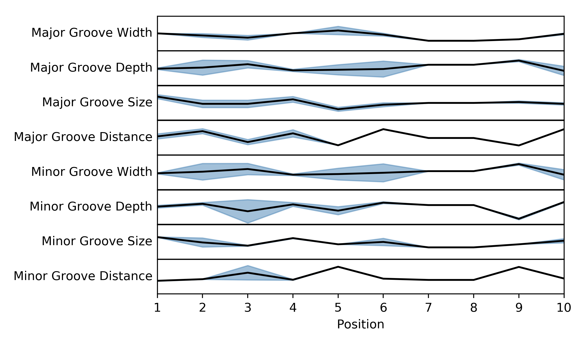

Examples¶
This page contains simple examples showcasing the basic functionality of the StruM package.
Contents
Basic Example¶
The basic usage of the StruM package covers the case where the binding site is already known. If the PWM is known already, a tool such as FIMO could be used to determine possible matches to the binding site.
In this case, a maximum likelihood StruM can be computed directly from these sequences. Source code for this example can be found here: basic.py.
#!/usr/bin/env python
# Imports
import numpy as np
from strum import strum
# Sequences representing some of the variability of the
# FOXA1 binding site.
training_sequences = [
"CTGTGCAAACA",
"CTAAGCAAACA",
"CTGTGCAAACA",
"CTGTGCAAACA",
"CAGAGCAAACA",
"CTAAGCAAACA",
"CTGTGCAAACA",
"CAATGTAAACA",
"CTGAGTAAATA",
]
# Initialize a new StruM object, using the basic features
# from the DiProDB table.
motif = strum.StruM(mode='basic')
# Use the training sequences to define the StruM,
# ensuring that that the variation of all position-specific
# features is at least 10e-5 (lim)
motif.train(training_sequences, lim=10**-5)
# Print out what the PWM would look like for these sequences
motif.print_PWM(True)
# Define an example sequence to analyze.
test_sequence = "ACGTACTGCAGAGCAAACAACTGATCGGATC"
# Reverse complement it, as the best match may not be on
# the forward strand.
reversed_test = motif.rev_comp(test_sequence)
# Get a score of the similarity for each kmer in the test
# sequence to the StruM.
forward_scores = motif.score_seq(test_sequence)
reverse_scores = motif.score_seq(reversed_test)
# Find the best match.
## Determine the strand the best match lies on
if np.max(reverse_scores) > np.max(forward_scores):
score, seq = reverse_scores, reversed_test
strand = "-"
else:
score, seq = forward_scores, test_sequence
strand = "+"
## Find position in the sequence
best_pos = np.argmax(score)
best_seq = seq[best_pos : best_pos + motif.k]
best_score = score[best_pos]
# Print the results to screen
print "\n", strand, best_pos, best_seq, best_score
You should see the position weight matrix that would be derived
from these sequences followed by the strand, position, matching
kmer, and score for the best match in the test sequence to the
StruM. The labels surrounding the PWM can be toggled off by
changing the labels parameter in strum.StruM.print_PWM().
1 2 3 4 5 6 7 8 9 10 11
A 0.000 0.222 0.333 0.444 0.000 0.000 1.000 1.000 1.000 0.000 1.000
C 1.000 0.000 0.000 0.000 0.000 0.778 0.000 0.000 0.000 0.889 0.000
G 0.000 0.000 0.667 0.000 1.000 0.000 0.000 0.000 0.000 0.000 0.000
T 0.000 0.778 0.000 0.556 0.000 0.222 0.000 0.000 0.000 0.111 0.000
+ 8 CAGAGCAAACA -43.2745526744
De Novo Motif Finding Example¶
More often, the task is to take a set of sequences and perform de novo motif finding, simultaneously modeling the motif and identifying the putative binding sites. The StruM package allows you to do this using expectation maximization.
The following example uses the EM capabilities of the StruM package to identify the motif GATTACA randomly inserted into 50 sequences. The source gode for this example can be downloaded here: em.py.
Refer to strum.StruM.train_EM() for more info on the parameters for the EM
algorithm.
#!/usr/bin/env python
# Imports
import numpy as np
from strum import strum
# 50 example sequences that contain the sequence GATTACA
training_sequences = [
"CGATTACAGATCTCCCGCGACCCTT", "GATGATTACAAGATGCGTCGAATAT",
"AGCCCTGTCCGCAGATTACAACCAC", "AGTTAACTCCCTAGATTACATTTGT",
"CGCTACAAAGTAAAGGAGATTACAT", "CTGATTACATCCTGTCCGAGGCGTG",
"CGATTACATTCAACTAGATGCGCGC", "GAACGGCATGGGCGATTACAACACT",
"CGGGGTGATCGTAATGTGATTACAA", "TGGTGCCCTGATTACACCTTACATG",
"GGCGAAGATTACATCCTCGGCCCAT", "ATCGGATTACATGTACTCGTCCACG",
"TCGGGGATTACAGGGGAGACGCTTA", "AGGTAGATTACATCGTTTTATTAGT",
"TATTGTGCTCGATTACAAGCAGGCC", "CAGACCGCTTACACGTTGATTACAA",
"GACACCCTCGATTACACCTCGTATA", "GGAACCGCGCGGATTACACGCGAGA",
"GTTGATTACAAGGGAAACATACTTG", "CCCACACATTAGCTCGAGATTACAT",
"GCAGAGTACCCTGCGGCGATTACAA", "ATACTCACGCATACAGATTACAAGA",
"GGTATGCATCGCGATTACAGCACTG", "GGATTACAGTGAGCCTGCACCTTGA",
"TTGGATTACATGGCCAAACTCCACT", "GGCCGGCAGAGATTACACTAGAGAG",
"ACAGATTACAGTGCAAATTGAGCAG", "CCACTGCATGACTGGATTACAGGCA",
"CATGCCGGCGGTTAACGGATTACAC", "CCGATTACAAGTGCTCTGCACGGCG",
"CATATAGAGGCGATTACAGCGTATC", "GGAACGATTACAGTGAGACTGCTCC",
"ATGATTACAGCGAAACGTATTCAAA", "TTTTCGGATGATTACACATTCTTCT",
"GTACAATGCATCGCGATTACAACAC", "GGATTACAAGTATCTGCCTGGATAC",
"CTCCCGATTACATCAGGTACGTCCT", "TAGAGAAGATTACAGCCTACTATTG",
"AAGCTTTGGGCCGTACGATTACATC", "GTAAGATTACAAGTTCAGGGTGATC",
"CATGATTACATTGGCGCCGACCTAC", "GCTGGATTACAATCATACCCGTGTA",
"GGTTAGGGATTACAAACAAGACGTG", "GACCGAGGTCTGATTACACTCCATC",
"ATAGACGCGATTACAAGCACTCTAA", "TTTCCGTTCTGCAGCTGATTACAAC",
"GGATTACACGCCTTCTCAAGCAGTG", "ATCCTAACAGGATTACAAGAATTAC",
"TATGAAGCTGAAGAAGATTACAGCA", "CCTGTCTCAGATTACAGCACGGCGG",
]
# Initialize a new StruM object, using the DNA groove related
# features from the DiProDB table. Specify to use 4 cpus
# when doing EM.
motif = strum.StruM(mode='groove', n_process=4)
# Train the model on the training sequences using expectation
# maximization, ensuring that that the variation of all
# position-specific features is at least 10e-5 (lim). Use
# a random_seed for reproducibility, and repeat with 20
# random restarts.
k = 8
motif.train_EM(training_sequences, fasta=False, k=k,
lim=10**-5, random_seed=620, n_init=20)
# Examine the output, by identifying the best matching
# kmer in each of the training sequences.
out = []
for sequence in training_sequences:
rseq = motif.rev_comp(sequence)
s1 = motif.score_seq(sequence)
s2 = motif.score_seq(rseq)
i1 = np.argmax(s1)
i2 = np.argmax(s2)
if s1[i1] > s2[i2]:
seq = sequence
i = i1
s = "+"
else:
seq = rseq
i = i2
s = "-"
out.append(seq[i:i+k])
print "{}{: <2} {: >{}} {} {}".format(
s, i, seq[:i].lower(), len(seq)-k,
seq[i:i+k].upper(), seq[i+k:].lower()
)
# Summarize these best matches with a simple PWM.
nucs = dict(zip("ACGT", range(4)))
PWM = np.zeros([4,k])
for thing in out:
for i,n in enumerate(thing):
PWM[nucs[n], i] += 1
PWM /= np.sum(PWM, axis=0)
for row in PWM:
print row
There are several sections that are reported in the output. First, the StruM gives a live update on how many iterations it took to converge for each of the random restarts. Once they have all completed, it shows the likelihoods for each of the restarts. The example output below highlights why it is important to repeat this process a number of times, as the results are highly variable. Finally we output a summary of the results. It is obvious that the model correctly identified the sequence NGATTACA as observed both in the highlighted sequences and the summary PWM at the bottom.
Retaining 50 out of 50 sequences, based on length (>25bp)
Detected cyclical likelihoods. Proceeding to max.
Converged after 10 iterations on likelihood
Converged after 5 iterations on likelihood
...
Restart Likelihoods: [1981.3168691613439, 1969.7041022864935, 1969.7041022864935, 650.89659719217332, 386.24238189057303, 369.62562708240256, 350.54071957020324, 350.54071957020324, 350.54071957020324, 327.8331936774872, 315.95426601483587, 242.73205512692093, 235.90375348128853, 149.92555284207441, -15.089679773020009, -68.060441249738645, -164.9202144304158, -373.49851273275601, -524.90598178843163, -524.91730067288267]
+0 CGATTACA gatctcccgcgaccctt
+2 ga TGATTACA agatgcgtcgaatat
+12 agccctgtccgc AGATTACA accac
+12 agttaactccct AGATTACA tttgt
...
[ 0.26 0. 1. 0. 0. 1. 0. 1. ]
[ 0.28 0. 0. 0. 0. 0. 1. 0. ]
[ 0.24 1. 0. 0. 0. 0. 0. 0. ]
[ 0.22 0. 0. 1. 1. 0. 0. 0. ]
Adding Additional Features¶
With the StruM package, in additional to the structural features provided in the DiProDB table, you can incorporate additional arbitrary features, as long as they provide a quantitative value across the binding site.
In the example below we will define a function that looks up a DNase
signal from a bigwig file to incorporate. The file we will be using
comes from a DNase experiment in K562 cells, mapped to hg19 from the
ENCODE project (ENCFF111KJD)
and can be downloaded from here.
The source code for this example can be found here: DNase.py.
# Imports
import numpy as np
import sys
import bx.bbi.bigwig_file
from strum import strum
# Specify the path to where you downloaded the bigwig
# file. E.g. "/Users/user/Downloads/ENCFF111KJD.bigWig"
DNase_bigwig_path = sys.argv[1]
# Define the function to be used by the StruM when
# converting from sequence-space to structural-space.
# NOTE: This function takes additional parameters.
def lookup_DNase(seq, data, chrom, start, end):
"""Lookup the signal in a bigWig file, convert NaNs to
0s, ensure strandedness, and return the modified signal.
Parameters:
data : (str) - Path to the bigWig file.
chrom : (str) - Chromosome name.
start : (int) - Base pair position on the chromsome of
the beginning of the region of interest.
end : (int) - Base pair position on the chromsome of
the end of the region of interest.
Returns:
trace : (1D array) - The signal extracted from the
bigWig file for the region of
interest.
"""
# Open file
bwh = bx.bbi.bigwig_file.BigWigFile(open(data))
# Lookup signal for regions
trace = bwh.get_as_array(chrom, min(start,end), max(start, end)-1)
# Clean up NaNs
trace[np.isnan(trace)] = 0.0
# Ensure strandedness
if start > end:
trace = trace[::-1]
return np.reshape(trace, [1,-1])
# Some example sequences and their chromosome positions,
# from human build hg19.
training_data = [
['GAGATCCTGGGTTCGAATCCCAGC', ('chr6', 26533165, 26533141)],
['GAGATCCTGGGTTCGAATCCCAGC', ('chr19', 33667901, 33667925)],
['GAGGTCCCGGGTTCGATCCCCAGC', ('chr6', 28626033, 28626009)],
['GAGGTCCTGGGTTCGATCCCCAGT', ('chr6', 28763754, 28763730)],
['GGGGGCGTGGGTTCGAATCCCACC', ('chr16', 22308468, 22308492)],
['GGGGGCGTGGGTTCGAATCCCACC', ('chr5', 180614647, 180614671)],
['AAGGTCCTGGGTTCGAGCCCCAGT', ('chr11', 59318028, 59318004)],
['GAGGTCCCGGGTTCAAATCCCGGA', ('chr1', 167684001, 167684025)],
['GAGGTCCCGGGTTCAAATCCCGGA', ('chr7', 128423440, 128423464)],
]
# Initialize a new StruM object.
motif = strum.StruM(mode='basic')
print motif.features
# Update the StruM to incorporate the function
# defined above, drawing on the bigWig as the
# data source.
motif.update(data=DNase_bigwig_path, func=lookup_DNase,
features=['k562_DNase'])
print motif.features
# Train the model using the modified StruM and the example
# data above
motif.train(training_data, lim=10.**-5)
# Evaluate the similarity to the model of a new sequence.
seq = 'GAGGTCCCGGGTTCAATCCCCGGC'
position = ['chr2', 157257305, 157257329]
rseq = motif.rev_comp(seq)
rposition = [position[0], position[2], position[1]]
s = [
motif.score_seq((seq, position)),
motif.score_seq((rseq, rposition))
]
strands = ['+', '-']
print "Best match found on the '{}' strand".format(strands[np.argmax(s)])
This CTCF site is correctly identified as being in the forward orientation, and there is an additional feature being considered.
['Twist', 'Rise', 'Bend']
['Twist', 'Rise', 'Bend', 'k562_DNase']
Best match found on the '+' strand
Plotting a graphical representation of the StruM¶
You may find it useful to look at a graphical representation of the
motif learned using the methods above. This can be accomplished useing
the strum.StruM.plot() method. Each of the features included in
the StruM will be displayed as its own linegraph. The line represents
the average value of that feature across the site, and the shaded area
represents +/- 1 standard deviation.
# Imports
from strum import strum
# Sequences representing some of the variability of the
# FOXA1 binding site.
training_sequences = [
"CTGTGCAAACA",
"CTAAGCAAACA",
"CTGTGCAAACA",
"CTGTGCAAACA",
"CAGAGCAAACA",
"CTAAGCAAACA",
"CTGTGCAAACA",
"CAATGTAAACA",
"CTGAGTAAATA",
]
# Train the motif using the 'groove' related features
motif = strum.StruM(mode='groove')
motif.train(training_sequences, fasta=False)
# Plot the the StruM, and save to the specified filename
motif.plot('FOXA1_strum.png')
This code produces the image below. If you consider the Major Groove Distance, you will notice that there is more variation at the beginning of the motif (to the left) than at the end, as indicated by the shaded region. It is also clear to see that FOXA1 prefers a higher value at position 6, and a low value at position 9.
